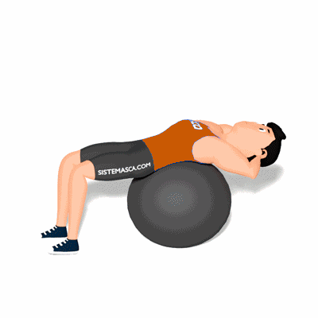

Bola Crunch

Neste exercício o principal motor do movimento, ou seja, o músculo que mais participa, é o reto abdominal. Os oblíquos internos e externos, de ambos os lados, atuam como sinergista, pois também fazem parte do movimento de flexão da coluna vertebral.
Ficha Técnica
Tipo: Funcional
Grupo Muscular: Abdome
Aparelho: Nenhum
Músculos: Nenhum
Como realizar
- Deite-se de costas sobre uma bola suíça com os joelhos flexionados em um ângulo de 90 graus e com os pés apoiados no chão e alinhados com os ombros;
- Entrelace os dedos atrás da cabeça;
- A bola deve estar sob seus quadris e sob a parte inferior das costas;
- Flexione o tronco em direção ao joelhos, elevando o tórax;
- Pare quando o meio das costas não estiver mais tocando a bola;
- Faça uma pausa e retorne à posição inicial.
 RC STORE
RC STORE